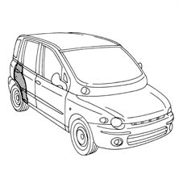
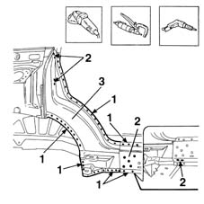
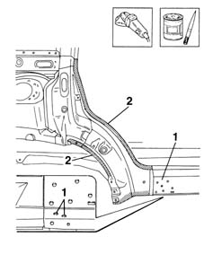
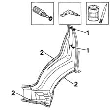
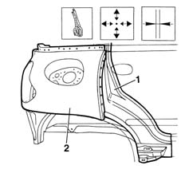
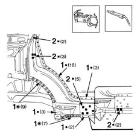
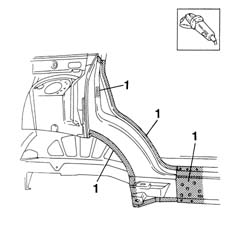
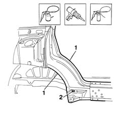

7210B35 R.R. REAR OUTER WHEEL ARCH
- Path
- Procedures > 72 PANELS AND FRAME > 7210 REMOVING REFITTING > 7210B structure elements-central and rear part > 7210B35 R.R. REAR OUTER WHEEL ARCH
- Kind
- repair procedure (removal / refitting; the operation number is the code)
- Applies to
- all engines; all production periods
- Interactive page
- https://sloeber94.github.io/elrnDB-fMltpl/en/#/2892312
Applies to: all engines; all production periods
 Removing
Removing
 Refitting
RefittingCheck if any of the connected parts are deformed by checking body alignment dimensions. Use appropriate measurement tools (reference rigs, templates or gauges).
Straighten the body if necessary.

Applies to: all engines; all production periods
1. Use a chamfering machine to remove the weld spots.
2. Drill out the weld spots shown in the figure.
3. Use a chisel and mallet to remove the outer wheel arch half.

Applies to: all engines; all production periods
Straighten the panel edges using a hammer and profiled stake.
Use a grinding wheel to remove the spot weld residues.
1. Make holes as shown in the figure.
2. Apply the electroweldable paint finish.

Applies to: all engines; all production periods
Use a rotary brush to remove the corrosion-proofing from around the inner and outer edge of the part.
1. Drill holes at the points shown in the figure.
2. Apply electroweldable paint finish to the panel edges indicated.

Applies to: all engines; all production periods
Refitting
Removing1. Position the part on the car and secure using self-locking grippers.
2. Fit the rear wing.
Fit the door seal and door.
Close the door.
Check the alignment and ensure the surrounding gaps are even.
Remove the parts fitted previously.

Applies to: all engines; all production periods
1. Use a spot welder to weld the areas shown in the figure.
2. Use a MIG welder to fill the holes made previously.

Applies to: all engines; all production periods
Correct any deformations in the panel using a profiled stake and mallet.
1. Use a grinding wheel to level the weld and remove.

Applies to: all engines; all production periods
Apply rust-proofing to newly-welded areas.
1. Seal the areas indicated in the figure.
Apply paint.
2. Apply wax oil protection through the hole indicated.

Applies to: all engines; all production periods
Refit fouling parts.